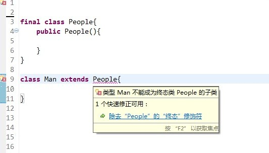

浅析Java中的final关键字
谈到final关键字，想必很多人都不陌生，在使用匿名内部类的时候可能会经常用到final关键字。另外，Java中的String类就是一个final类，那么今天我们就来了解final这个关键字的用法。下面是本文的目录大纲：
一.final关键字的基本用法
二.深入理解final关键字
若有不正之处，请多多谅解并欢迎指正。
一.final关键字的基本用法
在Java中，final关键字可以用来修饰类、方法和变量（包括成员变量和局部变量）。下面就从这三个方面来了解一下final关键字的基本用法。
1.修饰类
当用final修饰一个类时，表明这个类不能被继承。也就是说，如果一个类你永远不会让他被继承，就可以用final进行修饰。final类中的成员变量可以根据需要设为final，但是要注意final类中的所有成员方法都会被隐式地指定为final方法。

在使用final修饰类的时候，要注意谨慎选择，除非这个类真的在以后不会用来继承或者出于安全的考虑，尽量不要将类设计为final类。
2.修饰方法
下面这段话摘自《Java编程思想》第四版第143页：
“使用final方法的原因有两个。第一个原因是把方法锁定，以防任何继承类修改它的含义；第二个原因是效率。在早期的Java实现版本中，会将final方法转为内嵌调用。但是如果方法过于庞大，可能看不到内嵌调用带来的任何性能提升。在最近的Java版本中，不需要使用final方法进行这些优化了。“
因此，如果只有在想明确禁止 该方法在子类中被覆盖的情况下才将方法设置为final的。
注：类的private方法会隐式地被指定为final方法。
3.修饰变量
修饰变量是final用得最多的地方，也是本文接下来要重点阐述的内容。首先了解一下final变量的基本语法：
对于一个final变量，如果是基本数据类型的变量，则其数值一旦在初始化之后便不能更改；如果是引用类型的变量，则在对其初始化之后便不能再让其指向另一个对象。
举个例子：

上面的一段代码中，对变量i和obj的重新赋值都报错了。
二.深入理解final关键字
在了解了final关键字的基本用法之后，这一节我们来看一下final关键字容易混淆的地方。
1.类的final变量和普通变量有什么区别？
当用final作用于类的成员变量时，成员变量（注意是类的成员变量，局部变量只需要保证在使用之前被初始化赋值即可）必须在定义时或者构造器中进行初始化赋值，而且final变量一旦被初始化赋值之后，就不能再被赋值了。
那么final变量和普通变量到底有何区别呢？下面请看一个例子：
大家可以先想一下这道题的输出结果。为什么第一个比较结果为true，而第二个比较结果为fasle。这里面就是final变量和普通变量的区别了，当final变量是基本数据类型以及String类型时，如果在编译期间能知道它的确切值，则编译器会把它当做编译期常量使用。也就是说在用到该final变量的地方，相当于直接访问的这个常量，不需要在运行时确定。这种和C语言中的宏替换有点像。因此在上面的一段代码中，由于变量b被final修饰，因此会被当做编译器常量，所以在使用到b的地方会直接将变量b 替换为它的 值。而对于变量d的访问却需要在运行时通过链接来进行。想必其中的区别大家应该明白了，不过要注意，只有在编译期间能确切知道final变量值的情况下，编译器才会进行这样的优化，比如下面的这段代码就不会进行优化：
这段代码的输出结果为false。
2.被final修饰的引用变量指向的对象内容可变吗？
在上面提到被final修饰的引用变量一旦初始化赋值之后就不能再指向其他的对象，那么该引用变量指向的对象的内容可变吗？看下面这个例子：
这段代码可以顺利编译通过并且有输出结果，输出结果为1。这说明引用变量被final修饰之后，虽然不能再指向其他对象，但是它指向的对象的内容是可变的。
3.final和static
很多时候会容易把static和final关键字混淆，static作用于成员变量用来表示只保存一份副本，而final的作用是用来保证变量不可变。看下面这个例子：
运行这段代码就会发现，每次打印的两个j值都是一样的，而i的值却是不同的。从这里就可以知道final和static变量的区别了。
4.匿名内部类中使用的外部局部变量为什么只能是final变量？
这个问题请参见上一篇博文中《Java内部类详解》中的解释，在此处不再赘述。
5.关于final参数的问题
关于网上流传的”当你在方法中不需要改变作为参数的对象变量时，明确使用final进行声明，会防止你无意的修改而影响到调用方法外的变量“这句话，我个人理解这样说是不恰当的。
因为无论参数是基本数据类型的变量还是引用类型的变量，使用final声明都不会达到上面所说的效果。
看这个例子就清楚了：

上面这段代码好像让人觉得用final修饰之后，就不能在方法中更改变量i的值了。殊不知，方法changeValue和main方法中的变量i根本就不是一个变量，因为java参数传递采用的是值传递，对于基本类型的变量，相当于直接将变量进行了拷贝。所以即使没有final修饰的情况下，在方法内部改变了变量i的值也不会影响方法外的i。
再看下面这段代码：
运行这段代码就会发现输出结果为 helloworld。很显然，用final进行修饰并没有阻止在changeValue中改变buffer指向的对象的内容。有人说假如把final去掉了，万一在changeValue中让buffer指向了其他对象怎么办。有这种想法的朋友可以自己动手写代码试一下这样的结果是什么，如果把final去掉了，然后在changeValue中让buffer指向了其他对象，也不会影响到main方法中的buffer，原因在于java采用的是值传递，对于引用变量，传递的是引用的值，也就是说让实参和形参同时指向了同一个对象，因此让形参重新指向另一个对象对实参并没有任何影响。
所以关于网上流传的final参数的说法，我个人不是很赞同。
参考资料：
《Java编程思想》

相关文章
- 深入理解Java中的final关键字
- 模式匹配和函数复合
- 单例模式中为什么用枚举更好
- 类加载器的工作原理
- 避免Java应用中NullPointerException的技巧和最佳实践
- 类加载器不喜欢我，想我慢下来
- 为任务关键型Java应用优化垃圾回收（下）
- 如何成为一名Java冠军程序员？
- Java Web系列：JDBC 基础
- maven环境快速搭建
1 条评论


来自微博的评论


最新评论
 建造者模式写的很好，公司的http请求就是用建造者模式封装的，http请求方法的参数是一个抽象的Bu...applixy
建造者模式写的很好，公司的http请求就是用建造者模式封装的，http请求方法的参数是一个抽象的Bu...applixy- 其实讲解每一种设计模式都可以设想有两个或多个人在做并行开发，先明确模式中的每一部分分别由谁来负责，再...applixy
- 观察者模式其实就是前端开发中常用的Listener，其关键点在于subject规定接口并负责调用接口...applixy
- Re: 在做性能测试之前需要知道什么三句话能讲明白的事情，让开头那两个故事绕晕了。kongkong
- Re: JVM调优总结（1）：一些概念学习了 好文章赵
- Re: 给Java说句公道话说到底作者只是想表达java的简单，可控性强而已。程序猿喜欢用什么程序是一种认知的信仰，没必要去比较...玩世不恭
- Re: Java线程面试题 Top 50求原文，也感谢辛苦翻译，大赞无敌
- Re: 浅析Java中的final关键字这是目前看到的关于final修饰符最详细的描述。Mingzi

关于ImportNew
ImportNew 专注于 Java 技术分享。于2012年11月11日 11:11正式上线。是的，这是一个很特别的时刻 :)
ImportNew 由两个 Java 关键字 import 和 new 组成，意指：Java 开发者学习新知识的网站。 import 可认为是学习和吸收， new 则可认为是新知识、新技术圈子和新朋友……


联系我们
Email：ImportNew.com@gmail.com
新浪微博：@ImportNew
推荐微信号


反馈建议：ImportNew.com@gmail.com
广告与商务合作QQ：2302462408
© 2016 ImportNew